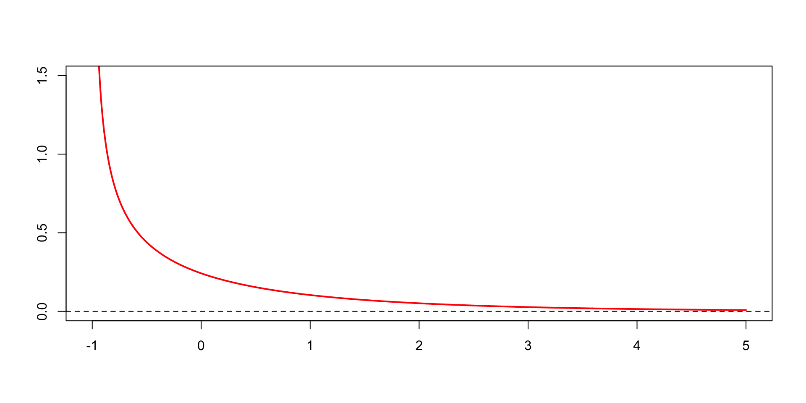

In this tutorial we use simulation to understand and explore the methods for prediction interval calculation.
Activities
Exercises 1 & 2: Simulating 95% prediction intervals — coverage and average length (width)
Exercise 3: Investigating the effect of model misspecification on prediction interval properties
Exercise 4: Simulating prediction intervals with non-normal disturbances
Recap: Prediction Intervals
Consider an AR(1) model and assume \(Y_{n+1}\) has conditional distribution: \[
Y_{n+1} = \phi_{1}Y_{n} + U_{n+1}
\quad \text{and} \quad
Y_{n+1}\mid \mathscr{Y}_{t} \sim \mathrm{N}(\phi_{1}Y_{n}, \sigma_{n}^{2})
\]\[
\color{blue}{\implies\quad \sigma_{n}^{2}=\operatorname{var}(Y_{n+1}\mid\mathscr{Y}_{n})
= \operatorname{var}(U_{n+1}\mid\mathscr{Y}_{n})}
\] where \(U_{t+1}\) is the 1-step-ahead prediction error.
The 95% confidence interval for \((Y_{n+1}\mid\mathscr{Y}_{n})\) is: \[\phi_{1}Y_{n}\pm 1.96\times \sigma_{n}\]
It follows that the 95% prediction interval for \(Y_{n+1}\) is: \[\quad\quad\color{purple}{\hat{\phi}_{1}}Y_{t}\color{black}{\,\pm\, 1.96\times\,}\color{teal}{\hat{\sigma}_{n}}\color{black}\quad\text{where}\quad \begin{aligned}\color{purple}{\hat{\phi}_{1}}&\color{purple}{\text{ is the usual parameter estimate}}\\
\color{teal}{\hat{\sigma}^{2}_{n}}&\color{teal}{=\frac{1}{n}\sum^{n}_{t=2}\hat{U}_{t}^{2}}\end{aligned}\] assuming \(\operatorname{var}(U_{t}\mid\mathscr{Y}_{t-1})\) is constant for all \(t\).
Recap: Prediction Intervals
It follows that the 95% prediction interval for \(Y_{n+1}\) is: \[\quad\quad\color{purple}{\hat{\phi}_{1}}Y_{n}\color{black}{\,\pm\, 1.96\times\,}\color{teal}{\hat{\sigma}_{n}}\color{black}\quad\text{where}\quad \begin{aligned}\color{purple}{\hat{\phi}_{1}}&\color{purple}{\text{ is the usual parameter estimate}}\\
\color{teal}{\hat{\sigma}^{2}_{n}}&\color{teal}{=\frac{1}{n}\sum^{n}_{t=2}\hat{U}_{t}^{2}}\end{aligned}\] assuming \(\operatorname{var}(U_{t}\mid\mathscr{Y}_{t-1})\) is constant for all \(t\).
This prediction interval contains \(Y_{n+1}\) with approximately 95% probability in repeated samples. \(\to\) we will illustrate this with a simulation
This probability is understood in the frequentist sense:
given repeated drawings from the “population” of the data, the proportion of the constructed intervals will include actual \(Y_t\) is 95%.
Precision: A narrower prediction interval indicates a more precise forecast.
Exercises 1 and 2
Simulate the 95% prediction intervals for \(Y_{t+h}\) for \(h=1,\dots,12\) for the AR process: \[Y_{t}=0.8Y_{t-1}+U_{t}\quad\text{where}\quad U_{t}\sim\mathrm{N}(0,1)\] Include in the simulation a calculation for the average length of the PIs for each \(h\).
Code Outline
Repeat the following experiment reps=1000 times:
Generate \(200+12\) draws of \(U_t\) from \(\mathrm{N}(0,1)\)
Simulate \(200+12\) observations from the AR(1) process
Withhold the final 12 observations as test set
Estimate the AR(1) model with the training set
Compute and store the upper and lower bounds of 95% PI for \(h=1,2,\dots,12\)
Check whether the true values are contained within the 95% PIs
Exercise 1: Compute the probability at which the 95% PIs contains the true \(Y_{t+h}\) for \(h=1,2,\dots,12\)
Exercise 2: Compute the average lengths of the 95% PIs for each \(h=1,2,\dots,12\)
Exercises 1 and 2
Simulate the 95% prediction intervals for \(Y_{t+h}\) for \(h=1,\dots,12\) for the AR process: \[Y_{t}=0.8Y_{t-1}+U_{t}\quad\text{where}\quad U_{t}\sim\mathrm{N}(0,1)\] Include in the simulation a calculation for the average length of the PIs for each \(h\).
Simulate the 95% prediction intervals for \(Y_{t+h}\) for \(h=1,\dots,12\) for the AR process: \[Y_{t}=0.8Y_{t-1}+U_{t}\quad\text{where}\quad U_{t}\sim\mathrm{N}(0,1)\] Include in the simulation a calculation for the average length of the PIs for each \(h\).
The average length of the interval is increasing in \(h\), which reflects the formula we have seen in lectures for the variances for \(h\)-step-ahead forecasts. \[\textstyle\operatorname{var}(U_{t\mid t-h})=\sum^{h-1}_{j=0}\phi_{1}^{2j}\sigma^{2}\qquad\color{teal}{\boxed{\leftarrow\;\textsf{\small{}From Lecture 9}\;}}\]
Intuition: it is more difficult to forecast further into the future.
Exercise 3
Now change the simulation to demonstrate the effects of model misspecification on the properties of the prediction intervals. \(\to\)Simulate AR(1) data, but forecast with MA(1)
What are the implications for the prediction intervals? Explain the results for the lengths of the prediction intervals for \(h>1\).
Consider the MA(1) model: for any \(t\) we have \[Y_{t}=U_{t}+\theta_{1}U_{t-1}\quad\text{where}\quad U_{t}\sim\mathrm{N}(0,\sigma^{2})\] To compute the 95% PI for \(Y_{t+h}\), we need to know the distribution for \(Y_{t+h}\mid\mathscr{Y}_{t}.\)
Consider the MA(1) model: for any \(t\) we have \[Y_{t}=U_{t}+\theta_{1}U_{t-1}\quad\text{where}\quad U_{t}\sim\mathrm{N}(0,\sigma^{2})\] To compute the 95% PI for \(Y_{t+h}\), we need to know the distribution for \(Y_{t+h}\mid\mathscr{Y}_{t}.\)
When \(h=1\):
Mean of \(Y_{t+1}\mid\mathscr{Y}_{t}\):\(\mathbb{E}(Y_{t+1}\mid\mathscr{Y}_{t})=\theta_{1}u_{t}\).
How about the variance?
\(\displaystyle\operatorname{var}(Y_{t+1}\mid\mathscr{Y}_{t})=\underbrace{\operatorname{var}(U_{t+1}\mid\mathscr{Y}_{t})}_{=\operatorname{var}(U_{t+1})=\sigma^{2}}+\underbrace{\;\;\operatorname{var}(\theta_{1}U_{t}\mid\mathscr{Y}_{t})\;\;}_{=0,\; \theta_{1}u_{t}\text{ is a constant}}\)\(=\sigma^{2}\)
Consider the MA(1) model: for any \(t\) we have \[Y_{t}=U_{t}+\theta_{1}U_{t-1}\quad\text{where}\quad U_{t}\sim\mathrm{N}(0,\sigma^{2})\] To compute the 95% PI for \(Y_{t+h}\), we need to know the distribution for \(Y_{t+h}\mid\mathscr{Y}_{t}.\)
When \(h=1\):
Mean of \(Y_{t+1}\mid\mathscr{Y}_{t}\):\(\mathbb{E}(Y_{t+1}\mid\mathscr{Y}_{t})=\theta_{1}u_{t}\).
Variance of \(Y_{t+1}\mid\mathscr{Y}_{t}\):\(\operatorname{var}(Y_{t+1}\mid\mathscr{Y}_{t})=\sigma^{2}\)
Given that \(Y_{t+1}\mid\mathscr{Y}_{t}=U_{t+1}+\theta_{1}u_{t}\) and \(U_{t+1}\sim\mathrm{N}(0,\sigma^{2})\),
\(\implies Y_{t+1}\mid\mathscr{Y}_{t}\sim\mathrm{N}(\theta_{1}u_{t},\sigma^{2})\quad\)\(\color{teal}{\implies \textsf{the 95\% PI is}\quad \hat{\theta}_{1}u_{t}\pm 1.96\hat{\sigma}}\)
Consider the MA(1) model: for any \(t\) we have \[Y_{t}=U_{t}+\theta_{1}U_{t-1}\quad\text{where}\quad U_{t}\sim\mathrm{N}(0,\sigma^{2})\] To compute the 95% PI for \(Y_{t+h}\), we need to know the distribution for \(Y_{t+h}\mid\mathscr{Y}_{t}.\)
When \(h=1\), the 95% prediction interval is \(\hat{\theta}_{1}u_{t}\pm 1.96\hat{\sigma}\).
When \(h=2\),we have \(Y_{t+2}\mid\mathscr{Y}_{t}=U_{t+2}+\theta_{1}U_{t-1}\).
Consider the MA(1) model: for any \(t\) we have \[Y_{t}=U_{t}+\theta_{1}U_{t-1}\quad\text{where}\quad U_{t}\sim\mathrm{N}(0,\sigma^{2})\] To compute the 95% PI for \(Y_{t+h}\), we need to know the distribution for \(Y_{t+h}\mid\mathscr{Y}_{t}.\)
When \(h=1\), the 95% prediction interval is \(\hat{\theta}_{1}u_{t}\pm 1.96\hat{\sigma}\).
When \(h\ge 2\), we have \(Y_{t+h}\mid\mathscr{Y}_{t}=U_{t+h}+\theta_{1}U_{t+h-1}\).
Consider the MA(1) model: for any \(t\) we have \[Y_{t}=U_{t}+\theta_{1}U_{t-1}\quad\text{where}\quad U_{t}\sim\mathrm{N}(0,\sigma^{2})\] To compute the 95% PI for \(Y_{t+h}\), we need to know the distribution for \(Y_{t+h}\mid\mathscr{Y}_{t}.\)
When \(h=1\), the 95% prediction interval is \(\hat{\theta}_{1}u_{t}\pm 1.96\hat{\sigma}\).
When \(h\ge 2\), the 95% prediction interval is \(0\pm 1.96\times\sqrt{(1+\hat{\theta}_{1}^{2})\hat{\sigma}^{2}}\).
Applying an MA(1) model produces prediction intervals of equal length for every \(h>1\).The fact that the MA(1) model is misspecified in this case does not change its formula for calculation.
Exercise 4(a)
Next we well consider the properties of prediction intervals when the normality assumption is not correct. The normal and bootstrap prediction intervals will be compared.
The first distribution for \(U_t\) is the \(\chi_{1}^{2}\) (i.e. chi-squared with 1 degree of freedom) centered to have mean 0.
We know that when \(X\sim\chi_{k}^{2}\), \(\mathbb{E}(X)=k\) and \(\operatorname{var}(X)=2k\).
To standardise it (mean 0 and unit variance), we can take the “z-score”: \[U=\frac{X-\mathbb{E}(X)}{\sqrt{\operatorname{var}(X)}}=\frac{X-1}{\sqrt{2}}\]
The true DGP is:
\[Y_{t}=\phi_{1}Y_{t-1}+U_{t}\quad\textsf{where}\quad \color{blue}{\underbrace{\;\;U_{t}=\frac{X-1}{\sqrt{2}}\quad\textsf{and}\quad X\sim\chi_{1}^{2}\;\;}_{\chi^{2}_{1}\textsf{ centered to have mean 0}}}\]
x <-seq(-1, 5, length.out =500) # support starts at -1y <-dchisq(x +1, df =1) # density of χ²(1), shiftedplot(x, y, type ="l", col ="red", lwd =2,main ="", ylab ="", xlab ="", ylim =c(0, 1.5))abline(h =0, lty =2) # horizontal line at 0

The following code took me around 27 minutes and 10 seconds to run (on a 2025 MacBook Pro, 5 minutes slower than David’s “unremarkable 2011 MacBook Pro”).
The coverage results are very similar across the boards.
Note: Remember these are just simulation estimates from only 1000 replications, and don’t over-interpret small differences.
Nevertheless there might be a slight deficiency of about 1% in the coverage of the bootstrap intervals relative to the normal intervals when \(\phi=0.9\).
Otherwise, there is little to choose between the two intervals on this criterion.
This is quite interesting because theoretically the bootstrap intervals are valid in this case but the normal intervals are not.
Note: CLT does not provide an approximation for non-normal data when computing prediction intervals.
print(AvgLength) # Normal Assumption (Misspecified)
The bootstrap intervals can be as much as 10% shorter for small \(h\), although this advantage reduces to 5% or less as \(h\) increases.
Exercise 4(a)
Next we well consider the properties of prediction intervals when the normality assumption is not correct. The normal and bootstrap prediction intervals will be compared.
The first distribution for \(U_t\) is the \(\chi_{1}^{2}\) (i.e. chi-squared with 1 degree of freedom) centered to have mean 0.
Overall:
There are not major differences between the two intervals and the choice would be subjective.
The advantage in length may suggest some weak preference for the bootstrap intervals in this particular model.
Exercise 4(b)
Next we well consider the properties of prediction intervals when the normality assumption is not correct. The normal and bootstrap prediction intervals will be compared.
The second distribution for \(U_t\) is the \(t\) distribution with 4 degrees of freedom.
The true DGP is: \[Y_{t}=\phi_{1}Y_{t-1}+U_{t}\quad\textsf{where}\quad \color{blue}{U_{t}\sim t_{4}}\] This distribution has fatter tails (higher kurtosis) than \(\mathrm{N}(0,1)\):
x <-seq(-4, 4, length.out =1000)y_t <-dt(x, df =4)y_norm <-dnorm(x)plot(x, y_t, type ="l", col ="red", lwd =2,ylim =c(0, 0.45),ylab ="", xlab ="", main ="")lines(x, y_norm, col ="blue", lty =2, lwd =2)abline(h =0, lty =3)legend("topright", legend =c("t (df=4)", "Normal(0,1)"), col =c("red", "blue"), lty =c(1, 2), lwd =2)
One finding to note is that the coverage properties deteriorate for larger \(h\) when \(\phi_{1}=0.9\).
The finite sample statistical properties of prediction with strong autocorrelation (i.e., large \(\phi_{1}\)) can require larger samples for the asymptotic properties (i.e. 95% coverage) to apply.
print(AvgLength) # Normal Assumption (Misspecified)
The average lengths of the prediction intervals increases with \(h\) and \(\phi_{1}\)(the same applied in part a)\(\implies\) Long-horizon prediction is more difficult when time series are more strongly autocorrelated.
Overall, there is no advantage to be found for the bootstrap intervals in this model. If anything they are slightly longer.
Despite the non-normality, the normal prediction intervals work quite well in this case.
This could be due to the shape of non-normality is different in this case, as the distribution is symmetric.